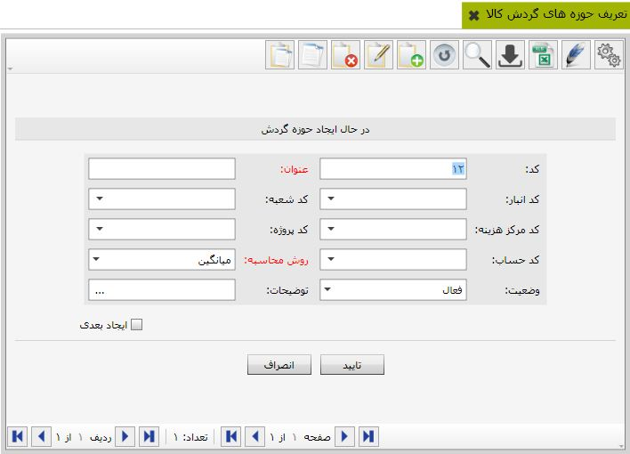

برای مشاهده «گزارشات موجودی کالاها» لطفا از منوی اصلی نرم افزار، آیکن مربوط به آن را کلیک نمایید. همانطور که در تصویر ذیل مشاهده می نمایید، فرم گزارشات موجودی کالاها قابل مشاهده می باشد. لازم به توضیح است که گزارشات موجودی کالاها بر اساس دوره مالی، نوع حوزه گردش مالی، نوع رابط، شخص، مراکز هزینه، محاسبات ابتدای دوره و انتهای دوره قابل مشاهده، تنظیم و چاپ می باشد.
پس از اینکه دکمه گزارش را کلیک نمایید، امکان مشاهده پیش نمایش گزارشات بر اساس گزارشات محلی و مشترک بر پیاده سازی شده است. لازم به توضیح است که امکان تنظیمات طراحی گزارشات از طریق دکمه های «طراح»، «پیش نمایش» و «چاپ» برای کاربران مهیا گردیده است.